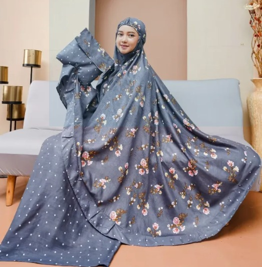

About the Artisan
The mukena is made by local sewing and embroidery artisans who approach prayer wear with care, respect, and attention to how the garment feels in daily worship.
Premium Prayer Wear
Mukena Bordir Premium brings together soft prayer-wear fabric, careful sewing, and embroidery inspired by Tasikmalaya's long-standing Muslim fashion craftsmanship.

The mukena is made by local sewing and embroidery artisans who approach prayer wear with care, respect, and attention to how the garment feels in daily worship.
Each piece is shaped through hand-guided cutting, sewing, embroidery placement, and finishing. The details are made to feel elegant without losing softness and practicality.
The product uses comfortable prayer-wear fabric, embroidery thread, and selected accents that support clean drape, neat folds, and a premium presentation.
Tasikmalaya is closely associated with Muslim fashion and embroidery. This mukena carries that identity through refined detail and respectful modest design.
"A well-made mukena is quiet luxury: soft fabric, careful embroidery, and a feeling of calm."Mukena Bordir Premium product story
Production includes fabric selection, pattern cutting, sewing, embroidery, finishing, folding, and final inspection. Small-batch making helps maintain consistency while preserving handmade value.